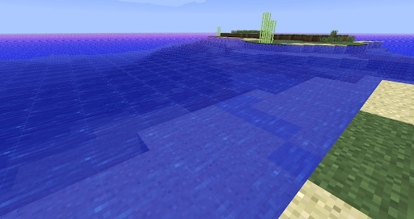

For our final project for CS184, we want to create a mod for Minecraft to allow realistic sky rendering and water animations by building out a path tracer and implementing realistic clouds, improved sky gradients, water reflections, and more.
Currently Minecraft possesses simple yet iconic block-styled graphics in their virtual worlds. Some examples of the current implementations of sky and water modeling are below:
|  |
As you can see, some of the current features consist of blocked clouds, a simple sun consisting of a point light source, and flat dull non-reflective water. We want to implement more photorealistic and aesthetically pleasing skies and water with natural lighting by utilizing ray tracing on top of the existing Minecraft graphics. This problem is important to us as some of us are avid Minecraft players and given the importance of virtual environments in the COVID-19 pandemic, improving the game play and experience of Minecraft is more crucial now than ever. The challenging part of this will be creating an efficient ray tracer, and determining a realistic way of rendering clouds and water reflection and refraction.
We will implement ray tracing in Minecraft and improve the way that the sky and water are rendered. We will try to add diffuse shadows and other effects implemented in previous projects in this minecraft shader. These goals should be doable because we are working off of concepts that we’ve previously covered and implemented in class, and there should be many resources and examples online of other people doing this as well. In the end, we just want something that looks visually pleasing and impressive. We’ll want to include photos of the water and the sky to show our new methods of rendering them. We can create a video of us walking through and demoing parts of Minecraft that are rendered differently with our shader. We can also include the shader pack and instructions on how to install so that others can play around with it on their own. To measure the quality of our mod, we will look at changes to FPS, and an eye test/photos comparing our mod with existing shader mods. We plan to determine how our shader pack compares to existing shaders and in what ways we differ from existing shaders, specifically analyzing how we render the water and the sky. We plan to implement ray tracing for the skies and water and if we’re ahead of schedule we hope to also add in ray tracing/shading for the general terrain and scenery as well.
April 13 : Setup Minecraft and download necessary resources.
April 13 - 16: Look into existing shader packs, conduct algorithm research and research how to render realistic water with a path tracer.
April 16 - 27: Implement a good path tracer and compare performance to existing path tracer mods.
April 27 - May 4: Implement water rendering: add texture, refraction, and reflection to the water.
May 4 - May 11: Implement sky rendering: retexture clouds and add natural lighting
Improved Shader and Texture Level of Detail Using Ray Cones
We will use GLSL and the Minecraft interface to make this project.